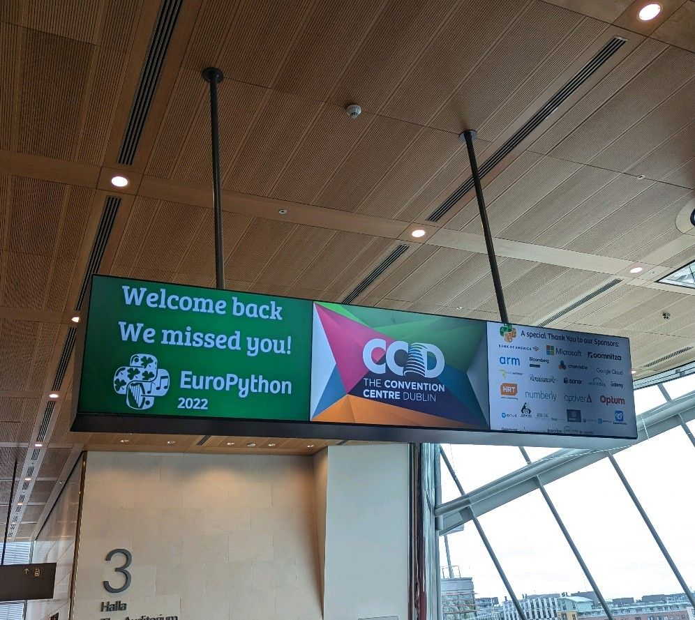
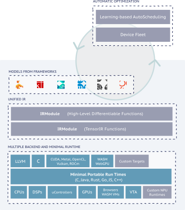

from collections import ChainMap
a = {'a':1}
b = {'b': 2}
c = {'b': 3, 'c':4
}
chainmap = ChainMap(a,b,c)EuroPython 2022 - Conference Notes & Summary
europython
Notes for EuroPython2022 (Update daily)

Schedule: https://ep2022.europython.eu/schedule/
Session that I attended: #europython
- Properties testing with Hypothesis
- TDD Development with Pytest
- Python Object under the hood
- Norvig’s lispy - beautiful and illuminating Python code
- Introduction to Apache TVM
- From pip to poetry - Python ways of packagin and publishing
- Czech Drourght monitoring system - from manual work to global drought monitoring and mahcine learning with Python Protocol in Python
- Dance with shadows - stub mock and patch
- What Happen when you import a library in Python
- Music and code - good presentation
- Dodging AI Dystopia
- Make CPython Faster - Mark Shannon
- Use animated charts to present & share your findings with ipyvizzu
- DOCUMENTATION AS SECRET WEAPON
- JWST - James Webb Telescope
- Jupyter Under the hood architecture
- Python thread safety parallelism without GIL
- CPython Internals - implementation with a pipe operator
- Hydra configuration with experiment
Bulletproof Python – Property-Based Testing with Hypothesis
The term property based testing isn’t too important. In a nutshell hypothesis is a python library that help you to write (better) tests by modifying your workflow.
Prepare mock dataProvide a specification of data, lethypothesisdo the work- Perform some operation
- Assert the result with expected value
The rationale behind this is
Note
** People write code don’t come up with good test. **
For example, you can generate integers with hypotesis.strategies.integers, it does something smart under the hood so it’s not just random number but more meaningful test. For example, you usually want to test for zero, negative number, positive number, large number. hypoethsis try to maximize the variety of tests and you just need to give it a specification.
You can also generate more sophisticated data, for example, a tuple of two integers, where the second integer has to be larger than the first one.
@st.composite
def list_and_index(draw, elements=st.integers()):
first = draw(elements)
second = draw(st.integers(min_value=first + 1))
return (first, second)Think of it as your virtual QA buddy.
TDD Development with pytest
Workflow for TDD 1. Pick one bug/missing feature 2. Write a test that fails 3. Minimal amount of code that pass - (even hard coded!) 4. Refactor
There are good questions asked * In case of you don’t know what’s the expected answer, how do you write test that fails meaningfully?
I jump out of the session because of a call, so not too many comments about this session. In general I like the idea of TDD but struggle to apply the textbook version of TDD as examples are often much simpler than the real application.
Few key points * Tests as specification about your program (What it does and what not) * Understand why you test fail and pass. * Tests are also good source of documentation.
Thinking about test first also force you to think more about the design, you almost start from pseudocode (you function doesn’t even exist!).
Python objects Under the hood
Covers a lot about Python’s magic method * __init__ add __new__ * __add__ and __radd__ * super() * __str__ and __repr__ * __next__ and __iter__ * Why __new__ is needed? * We need to create immutable object * Object creation start with __new__ which create an instance -> __init__ to customize the attributes * We need __new__ to create a new immutable object * But how’s python actually achieve immutable tuple? Unanswered
[Tutor] When to use new vs. init ? > new is the first step of instance creation. It’s called first, and is responsible for returning a new instance of your class. In contrast, init doesn’t return anything; it’s only responsible for initializing the instance after it’s been created.
Norvig’s lispy: beautiful and illuminating Python code
This is an interesting exercise to implement an Lisp interpreter in Python. I am not from CS background so this is brand new to me, and uncover some of the details that how programming language actually works. It involves parsing text into tokens and evaluate them with some grammar which can be represented as AST.
This is the AST for the example (define double (lambda (n) (* n 2))) drawn as a tree reference:
'*' 'n' 2
'n' └────┼────┘
│ │
'lambda' [ ] [ ]
└─────────┼──────────┘
│
'define' 'double' [ ]
└─────────┼──────────┘
│
[ ] The speaker also introduce ChainMap, which I am not aware of before.
A ChainMap stores multiple dictionaries, instead of merging them they are all stored in the object. Take a guess which `chainmap[‘a’], chainmap[‘b’] are?
chainmap['a'], chainmap['b'](1, 2)It pretty much behaves like a normal Python dictionary, except that when the same key exists in more than one of the dictionary, the one that is in the front of the argument list has higher priority.
Introduction to Apache TVM

- Apache TVM is a framework that try to squeeze extra performance from specialized hardware.
In practice, the workflow roughly go like this 1. Trained a model with your favored libraries (PyTorch/Tensorflow etc) 2. Use TVM to compile and tune -> After this you get a compiled module as output 3. Use TVM python API for inference
The performance gains are mainly from hardware architecture that can give better performance, TVM did some architecture search and try to find the optimal one.
Note
Maybe one side benefit of this is it does not need the deep learning pipeline dependecenies since you just need the TVM Python API and the model file for inference.
typing.Protocol in Python (Available in Python 3.8+)
Since the introduction of type hints, it has been a popular python feature and a lot more static analysis tools is added into the Python ecosystem. The most popular static analysis tool in Python is mypy.
Protocol is a way of strcutural subtyping, it’s best to understand it with an Example.
class Dog:
...
class Cat:
...
def eat_bread(Union[Dog, Cat]):
do_somthing()Imagine if you are importing the eat_bread function and you want to extend it with a new animal type. There are no way you can do it unless you go into the source code of the library and change the argument.
Protocol solve this problem in a way that I think it’s quite similar to traits, which is quite common in languages like Scala.
class EatsBread(Protocol):
def eat_bread(self):
...
def feed_bread(animal: EatsBread):
animal.eat_bread()
class Duck:
def eat_bread(self):
...
feed_bread(Duck()) # <-- OKPython is a dynamic typing language, which is flexible with duck typing. In essence, if something can swim and quack, it’s close enough to be consider as a duck. We only care about what the class can do, not the type of the class. So in this case, Duck has a method of eat_bread, and it maches the Protocol method and the static analysis tool will not have problem with it. As a result, we don’t need to extend the class or add a new class to Union everytime we extend a new class.
What Happened when you import a Python Library?
This is an interesting talk as I recently had a bug that related to this exactly. It was a bug that due to different mechanism of multiprocess, In Windows and some versions of Mac, it used a spawn process, in Linux it is fork process. The main difference is that spawn process will re-import all the Python modules in the new process and cause some issues. In short, it’s not a good idea to have side-effect when importing a library, always put that into a __name__ == __main__ block.
modulesare python object -> you can do something likeimport random; type(random)- Whenever you import a module, a module object is created with a name, optionally you can alias it with
import module as xyz - sys.modules is the Python VM that keep track of the imported library as a
dict- Since it is a dict, where the key is the name of the module and value as the module object
- If the module is imported more than 1 time, the
sys.modulesis smart enough to skip the import since the key already exist. It will just use themoduleobject instead.
How many modules imported in Python by default?
- Python Shell - 79
- IPython - 646!
- Jupyter - 1020!!!
It’s quite surprising how many libraries are imported by default, and this explains why it takes some time whenever you do ipython on a shell, as the Python Interpreter is busy reading all the files and evalute it.
Some other interesting notes: * Python use a Finder and Loader to import modules * sys.path is the order that Python Interpreter search for modules, and the first match wins (This is important if you have duplicate namespace or if you do namespace package) * Don’t do sys.path.append although you will find this very common if you do a Stackoverflow search, use environment variable PYTHONPATH=some_path instead
Make CPython Faster
The talk was delivered by Mark Shannon. The pace of the talk is quite fast and I couldn’t understand the details, but I think it is a good source of food for thought. Some keypoints * Memory access is slow * Dependent memory read is slower - 2 read is 2x slower because it has to be executed in sequence How to make Python 3.11 faster? * Lazy debugging info creation * (Almost) Zero Cost exceptions * In the try-block - push address to stack of the exception handler * with the expense of more memory - performance is improved in general case, but more expensive when exeception is raised
Jupyter Under the hood
- ZMQ as the network Protocol
- Dealer socker & router Socket
- 3 types of channels
- shell
- IO pub
- STDIN
Hydra configuration for experiments
`hydra` is a Python Library that support configuration with many advance features, which built on top of `OmegaConf`.
Features include:
* `instantiate` - dependency injection with configuration - for example you can do a partial instantiate
* Type checking
* Tab completion for configuration
* Multi-run
* Supports plugins
* Split configurations in multiple YAML files
* The structure of files largely resemble how a Python modules works. i.e. module.sub_module.xxx
Some downsides:
* It use Singleton and cause some problem